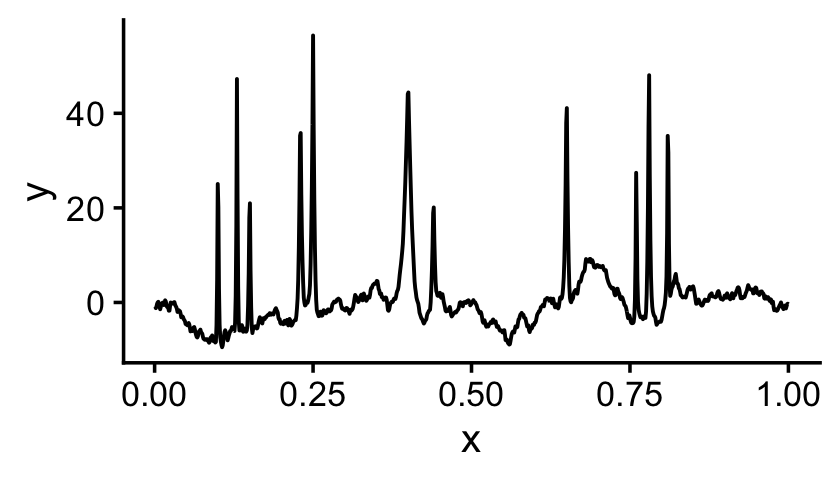
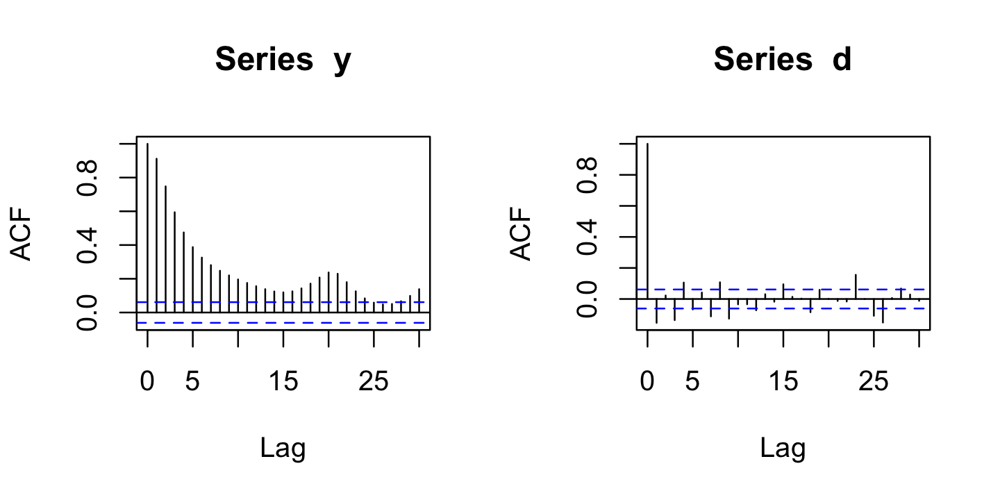
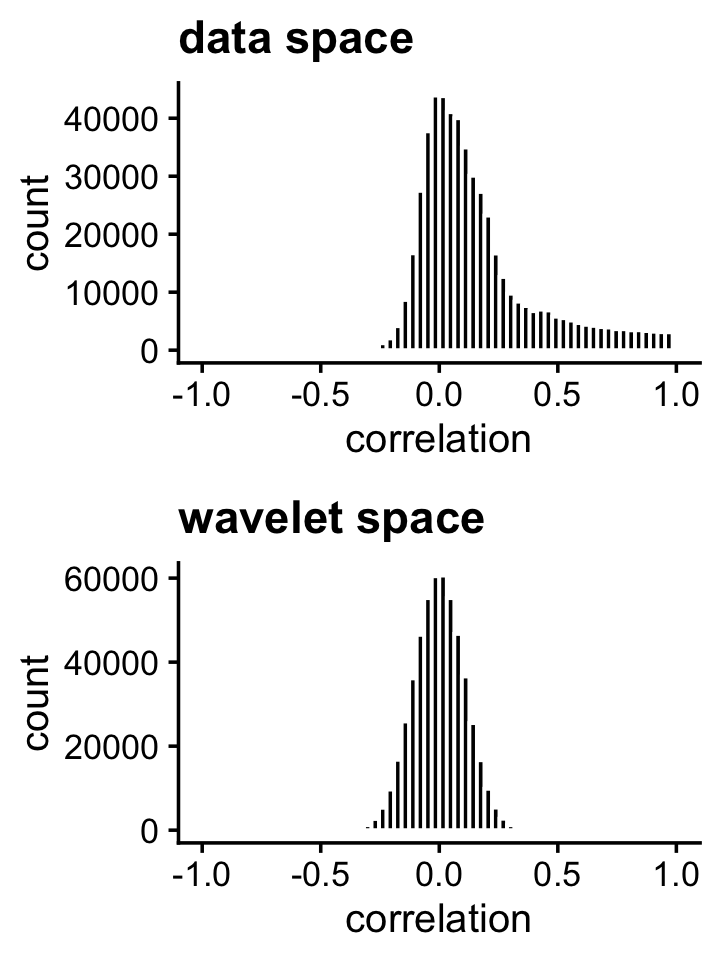
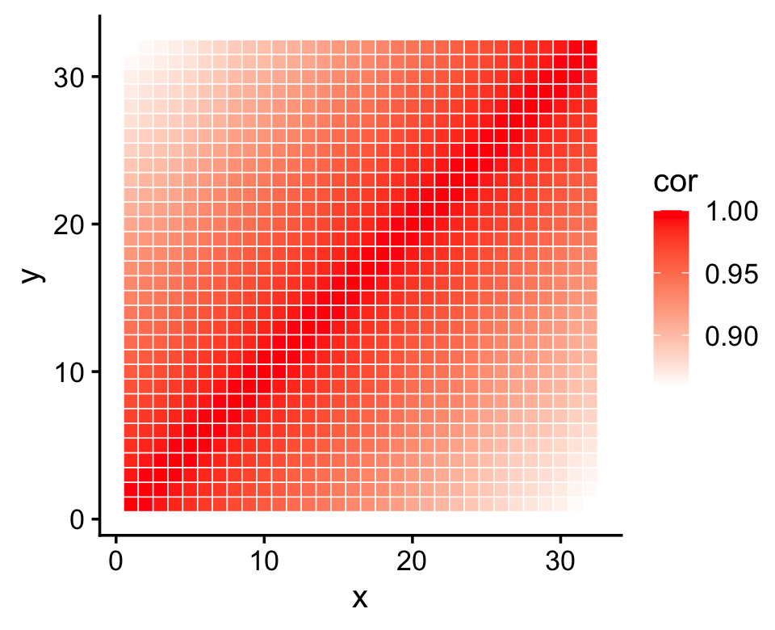
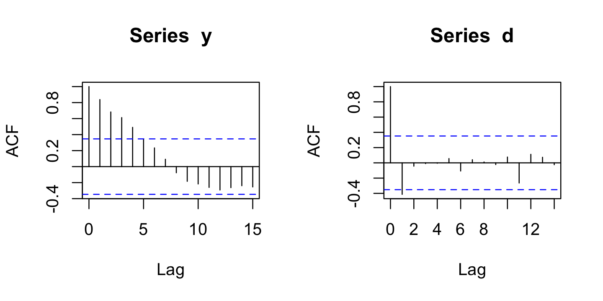
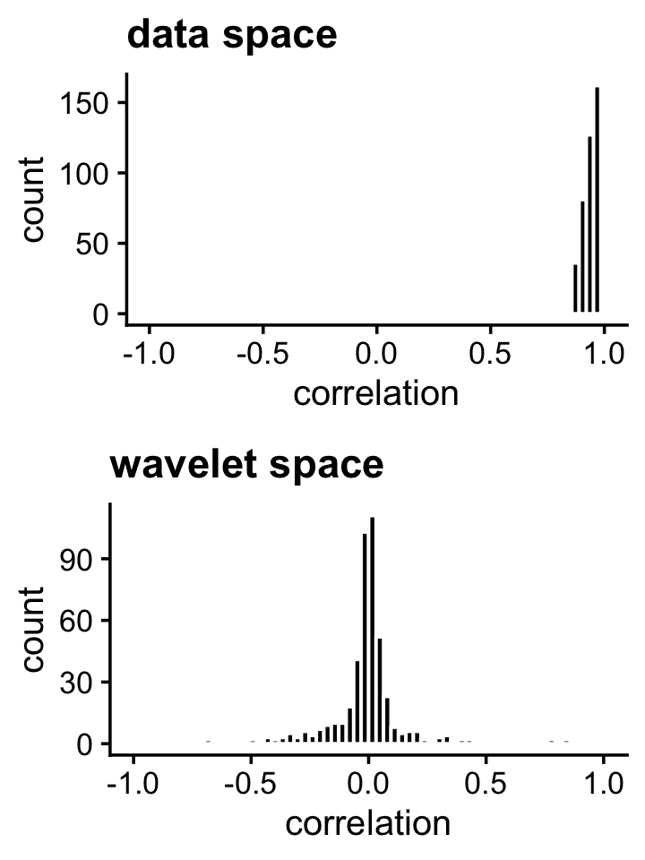

Last updated: 2026-02-19
Checks: 7 0
Knit directory:
fsusie-experiments/analysis/
This reproducible R Markdown analysis was created with workflowr (version 1.7.1). The Checks tab describes the reproducibility checks that were applied when the results were created. The Past versions tab lists the development history.
Great! Since the R Markdown file has been committed to the Git repository, you know the exact version of the code that produced these results.
Great job! The global environment was empty. Objects defined in the global environment can affect the analysis in your R Markdown file in unknown ways. For reproduciblity it’s best to always run the code in an empty environment.
The command set.seed(1) was run prior to running the
code in the R Markdown file. Setting a seed ensures that any results
that rely on randomness, e.g. subsampling or permutations, are
reproducible.
Great job! Recording the operating system, R version, and package versions is critical for reproducibility.
Nice! There were no cached chunks for this analysis, so you can be confident that you successfully produced the results during this run.
Great job! Using relative paths to the files within your workflowr project makes it easier to run your code on other machines.
Great! You are using Git for version control. Tracking code development and connecting the code version to the results is critical for reproducibility.
The results in this page were generated with repository version 5f82903. See the Past versions tab to see a history of the changes made to the R Markdown and HTML files.
Note that you need to be careful to ensure that all relevant files for
the analysis have been committed to Git prior to generating the results
(you can use wflow_publish or
wflow_git_commit). workflowr only checks the R Markdown
file, but you know if there are other scripts or data files that it
depends on. Below is the status of the Git repository when the results
were generated:
Ignored files:
Ignored: analysis/figure/
Untracked files:
Untracked: analysis/h3k27ac_cs1snp_fsusie.rds
Untracked: analysis/rosmap_h3k27ac_cache/
Untracked: analysis/rosmap_overview_cache/
Untracked: data/afreq.RData
Untracked: data/analysis_result/Fungen_xQTL.ENSG00000163808.cis_results_db.export.rds
Untracked: data/analysis_result/ROSMAP_haQTL.chr3_43915257_48413435.fsusie_mixture_normal_top_pc_weights.rds
Untracked: data/analysis_result/ROSMAP_mQTL.chr3_43915257_48413435.fsusie_mixture_normal_top_pc_weights.rds
Untracked: outputs/CD2AP_obj.RData
Untracked: outputs/CR1_CR2_all_effects.RData
Untracked: outputs/CR1_CR2_obj.RData
Untracked: outputs/ROSMAP_DLPFC_mega_eQTL.cs_only.tsv.gz
Untracked: outputs/ROSMAP_DLPFC_pQTL.cs_only.tsv.gz
Untracked: outputs/ROSMAP_haQTL_cs_effect_ha_peak_annotation.tsv.gz
Untracked: outputs/ROSMAP_haQTL_cs_snp_annotation.tsv.gz
Untracked: outputs/ROSMAP_haQTL_cs_snp_toppc1_annotation.tsv.gz
Untracked: outputs/ROSMAP_mQTL_cs_effect_cpg_annotation.tsv.gz
Untracked: outputs/ROSMAP_mQTL_cs_snp_annotation.tsv.gz
Untracked: outputs/ROSMAP_mQTL_cs_snp_toppc1_annotation.tsv.gz
Untracked: scripts_plot/cases_study/#CR1_CR2_from_RData.R#
Untracked: scripts_plot/cases_study/.#CR1_CR2_from_RData.R
Untracked: scripts_plot/cases_study/CR1CR2_zoomin_plot.pdf
Note that any generated files, e.g. HTML, png, CSS, etc., are not included in this status report because it is ok for generated content to have uncommitted changes.
These are the previous versions of the repository in which changes were
made to the R Markdown (analysis/whitening_demo.Rmd) and
HTML (docs/whitening_demo.html) files. If you’ve configured
a remote Git repository (see ?wflow_git_remote), click on
the hyperlinks in the table below to view the files as they were in that
past version.
| File | Version | Author | Date | Message |
|---|---|---|---|---|
| Rmd | 5f82903 | Peter Carbonetto | 2026-02-19 | wflow_publish("whitening_demo.Rmd", view = F, verbose = T) |
| html | 6bc1fb1 | Peter Carbonetto | 2025-12-19 | A few small fixes to the whitening demo. |
| Rmd | d772f04 | Peter Carbonetto | 2025-12-19 | workflowr::wflow_publish("whitening_demo.Rmd", view = F, verbose = T) |
| html | 0338444 | Peter Carbonetto | 2025-12-19 | Added plots to assess decorrelating effect of the DWT. |
| Rmd | d6a1b59 | Peter Carbonetto | 2025-12-19 | workflowr::wflow_publish("whitening_demo.Rmd", view = F, verbose = T) |
| Rmd | 840ee1e | Peter Carbonetto | 2025-12-19 | Added step to simulate noisy signals in the whitening_demo. |
| html | b4716a0 | Peter Carbonetto | 2025-12-19 | First build of the whitening_demo workflowr page. |
| Rmd | c5ab266 | Peter Carbonetto | 2025-12-19 | workflowr::wflow_publish("whitening_demo.Rmd") |
| Rmd | de24cf8 | Peter Carbonetto | 2025-12-19 | wflow_publish("index.Rmd") |
Here we give two simple examples to illustrate the decorrelating (“biwhitening”) effect of the wavelet transform (on signals that are not generated using wavelets).
Load the wavethresh package as well as a few other packages used this demo:
library(wavethresh)
library(reshape)
library(ggplot2)
library(cowplot)Set the seed for reproducibility:
set.seed(1)Simulate a set of signals using the “bumps” test function from Donoho & Johnson, with ARMA noise:
n <- 1024
m <- 100
SNR <- 2
v <- DJ.EX()
x <- seq(1,n)/n
ssig <- sd(v$bumps)
sigma <- ssig/SNR
Y <- matrix(0,m,n)
for (i in 1:m) {
e <- arima.sim(n = n,model = list(ar = 0.99,ma = 1))
e <- sigma*e/sqrt(var(e))
y <- v$bumps + e
Y[i,] <- y
}This is was the first noisy signal looks like:
y <- Y[1,]
pdat <- data.frame(x = x,y = y)
ggplot(pdat,aes(x = x,y = y)) +
geom_line() +
theme_cowplot(font_size = 12)
| Version | Author | Date |
|---|---|---|
| 0338444 | Peter Carbonetto | 2025-12-19 |
Now let’s compute the discrete wavelet transform (DWT) for each signal:
D <- matrix(0,m,n-1)
for (i in 1:m) {
y <- Y[i,]
D[i,] <- wd(y)$D
}One way to illustrate the decorrelating effect of the wavelet transform is to compare the autocorrelation for the original signal and for the wavelet coefficients (WCs). Let’s try this on the first noisy signal:
par(mfrow = c(1,2))
y <- Y[1,]
d <- D[1,]
acf(y)
acf(d)
| Version | Author | Date |
|---|---|---|
| 0338444 | Peter Carbonetto | 2025-12-19 |
Observe that the autocorrelation is mostly near zero for the WCs (right-hand plot).
Another way to illustrate the decorrelating effect of the DWT is to compute the sample correlations. Compare the sample correlations in the original data space to the sample correlations in the wavelet space:
cY <- cor(Y)
cD <- cor(D)
p1 <- ggplot(data.frame(x = cY[upper.tri(cY)]),aes(x = x)) +
geom_histogram(fill = "black",color = "white",bins = 64) +
xlim(-1,1) +
labs(x = "correlation",title = "data space") +
theme_cowplot(font_size = 12)
p2 <- ggplot(data.frame(x = cD[upper.tri(cD)]),aes(x = x)) +
geom_histogram(fill = "black",color = "white",bins = 64) +
xlim(-1,1) +
labs(x = "correlation",title = "wavelet space") +
theme_cowplot(font_size = 12)
plot_grid(p1,p2,nrow = 2,ncol = 1)
# Warning: Removed 2 rows containing missing values or values outside the scale range
# (`geom_bar()`).
# Removed 2 rows containing missing values or values outside the scale range
# (`geom_bar()`).
Indeed, the strong correlations in the original data space are removed in the wavelet space.
In the second example, we simulate a small data set from a Gaussian process (GP) with a Ornstein-Uhlenbeck (O-H) kernel:
n <- 2000
x <- seq(1,32)
d <- as.matrix(dist(x))
Sigma <- exp(-d/200)
Y <- mvrnorm(n,rep(0,32),Sigma)In a GP model, the correlations between the points “decay” with distance:
pdat <- melt(cor(Y))
colnames(pdat) <- c("x","y","cor")
ggplot(pdat,aes(x = x,y = y,fill = cor)) +
geom_tile(color = "white") +
scale_fill_gradient(low = "white", high = "red") +
theme_cowplot(font_size = 12)
Now perform the discrete wavelet transform on these data:
D <- t(apply(Y,1,function (x) wd(x)$D))ADD TEXT HERE
par(mfrow = c(1,2))
y <- Y[1,]
d <- D[1,]
acf(y)
acf(d)
ADD TEXT HERE.
cY <- cor(Y)
cD <- cor(D)
p1 <- ggplot(data.frame(x = cY[upper.tri(cY)]),aes(x = x)) +
geom_histogram(fill = "black",color = "white",bins = 64) +
xlim(-1,1) +
labs(x = "correlation",title = "data space") +
theme_cowplot(font_size = 12)
p2 <- ggplot(data.frame(x = cD[upper.tri(cD)]),aes(x = x)) +
geom_histogram(fill = "black",color = "white",bins = 64) +
xlim(-1,1) +
labs(x = "correlation",title = "wavelet space") +
theme_cowplot(font_size = 12)
plot_grid(p1,p2,nrow = 2,ncol = 1)
sessionInfo()
# R version 4.3.3 (2024-02-29)
# Platform: aarch64-apple-darwin20 (64-bit)
# Running under: macOS 15.7.1
#
# Matrix products: default
# BLAS: /Library/Frameworks/R.framework/Versions/4.3-arm64/Resources/lib/libRblas.0.dylib
# LAPACK: /Library/Frameworks/R.framework/Versions/4.3-arm64/Resources/lib/libRlapack.dylib; LAPACK version 3.11.0
#
# locale:
# [1] en_US.UTF-8/en_US.UTF-8/en_US.UTF-8/C/en_US.UTF-8/en_US.UTF-8
#
# time zone: America/Chicago
# tzcode source: internal
#
# attached base packages:
# [1] stats graphics grDevices utils datasets methods base
#
# other attached packages:
# [1] cowplot_1.1.3 ggplot2_4.0.1 reshape_0.8.9 wavethresh_4.7.2
# [5] MASS_7.3-60.0.1
#
# loaded via a namespace (and not attached):
# [1] gtable_0.3.6 jsonlite_2.0.0 dplyr_1.1.4 compiler_4.3.3
# [5] promises_1.3.3 tidyselect_1.2.1 Rcpp_1.1.0 stringr_1.5.1
# [9] git2r_0.33.0 dichromat_2.0-0.1 later_1.4.2 jquerylib_0.1.4
# [13] scales_1.4.0 yaml_2.3.10 fastmap_1.2.0 R6_2.6.1
# [17] plyr_1.8.9 labeling_0.4.3 generics_0.1.4 workflowr_1.7.1
# [21] knitr_1.50 tibble_3.3.0 rprojroot_2.0.4 RColorBrewer_1.1-3
# [25] bslib_0.9.0 pillar_1.11.0 rlang_1.1.6 cachem_1.1.0
# [29] stringi_1.8.7 httpuv_1.6.14 xfun_0.52 S7_0.2.0
# [33] fs_1.6.6 sass_0.4.10 cli_3.6.5 withr_3.0.2
# [37] magrittr_2.0.3 digest_0.6.37 grid_4.3.3 lifecycle_1.0.4
# [41] vctrs_0.6.5 evaluate_1.0.4 glue_1.8.0 farver_2.1.2
# [45] whisker_0.4.1 rmarkdown_2.29 tools_4.3.3 pkgconfig_2.0.3
# [49] htmltools_0.5.8.1